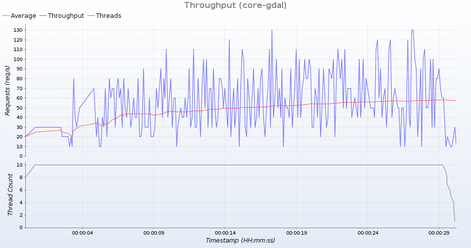

Group: core-gdal
Summary
| General | |
|---|---|
| Time | 20171101T170227+0000 - 20171101T170256+0000 |
| Duration in seconds | 30 |
| Number of requests | 1485 |
| Requests per second | 49 |
| Response duration (ms) | |
| Min | 1 |
| Average | 201 |
| Max | 5830 |
| Standard deviation | 599 |
| Response duration quantiles (ms) | |
| 10% | 3 |
| 20% | 6 |
| 30% | 10 |
| 40% | 15 |
| 50% | 20 |
| 60% | 27 |
| 70% | 39 |
| 80% | 58 |
| 90% | 282 |
| 99% | 2520 |
| 99.9% | 4811 |
| 100% (max. value) | 5830 |
| Response size (bytes) | |
| Total | 35692213 |
| Min | 465 |
| Average | 24035 |
| Max | 85331 |
| Standard deviation | 22544 |
| Status codes | |
| 200 | 1485 (100%) |

Detailed response information
Group: core_getmap-gdal
Summary
| General | |
|---|---|
| Time | 20171101T170258+0000 - 20171101T170328+0000 |
| Duration in seconds | 30 |
| Number of requests | 139 |
| Requests per second | 4 |
| Response duration (ms) | |
| Min | 196 |
| Average | 2225 |
| Max | 12980 |
| Standard deviation | 2319 |
| Response duration quantiles (ms) | |
| 10% | 561 |
| 20% | 896 |
| 30% | 1076 |
| 40% | 1317 |
| 50% | 1574 |
| 60% | 1896 |
| 70% | 2146 |
| 80% | 2764 |
| 90% | 3671 |
| 99% | 12759 |
| 99.9% | 12947 |
| 100% (max. value) | 12980 |
| Response size (bytes) | |
| Total | 61007548 |
| Min | 2282 |
| Average | 438903 |
| Max | 1180945 |
| Standard deviation | 357701 |
| Status codes | |
| 200 | 139 (100%) |

Detailed response information
Group: gdal_getmap-gdal
Summary
| General | |
|---|---|
| Time | 20171101T170331+0000 - 20171101T170400+0000 |
| Duration in seconds | 30 |
| Number of requests | 316 |
| Requests per second | 10 |
| Response duration (ms) | |
| Min | 50 |
| Average | 950 |
| Max | 2617 |
| Standard deviation | 655 |
| Response duration quantiles (ms) | |
| 10% | 122 |
| 20% | 171 |
| 30% | 247 |
| 40% | 845 |
| 50% | 1050 |
| 60% | 1233 |
| 70% | 1342 |
| 80% | 1505 |
| 90% | 1760 |
| 99% | 2360 |
| 99.9% | 2483 |
| 100% (max. value) | 2617 |
| Response size (bytes) | |
| Total | 110413930 |
| Min | 2277 |
| Average | 349411 |
| Max | 885939 |
| Standard deviation | 341473 |
| Status codes | |
| 200 | 316 (100%) |